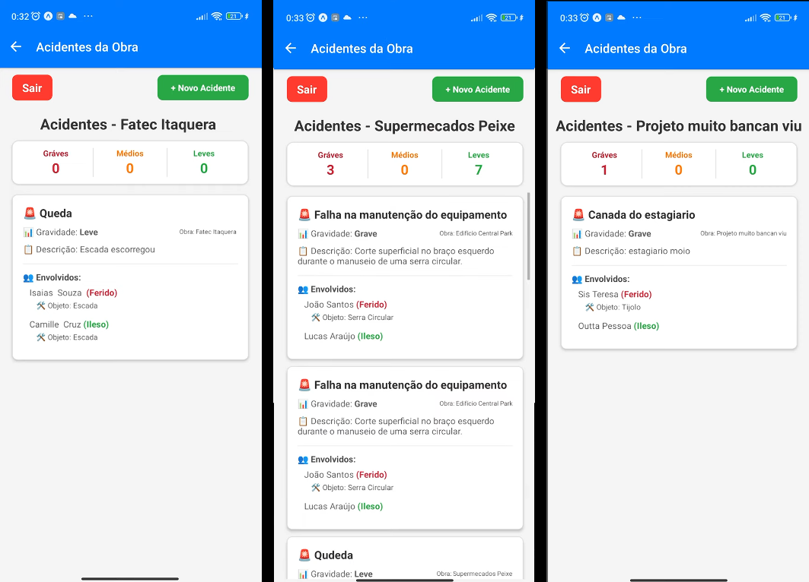

TAFE
Aplicativo de Segurança do Trabalho
Sobre o Projeto
O TAFE (Terminal de Anotação e Fiscalização de Eventos) é um aplicativo mobile desenvolvido com foco na segurança do trabalho na construção civil.
A plataforma permite o registro e monitoramento de acidentes e ocorrências em campo, facilitando o acompanhamento de eventos e contribuindo para um ambiente de trabalho mais seguro.
A solução visa garantir os direitos dos trabalhadores, além de aumentar a transparência entre colaboradores e empresas por meio de um sistema acessível e organizado.
Tecnologias utilizadas: Android, Java, XML
Repositório
Acesse o código do projeto no Snack:
Minha Participação
Atuei no desenvolvimento da interface do aplicativo, utilizando XML para estruturar as telas e garantir uma navegação intuitiva para o usuário.
Também participei da implementação das funcionalidades principais relacionadas ao registro de ocorrências e organização das informações no sistema.
O projeto foi desenvolvido com foco em usabilidade e clareza das informações, visando facilitar o uso em ambientes de trabalho dinâmicos como canteiros de obra.
Screenshots
